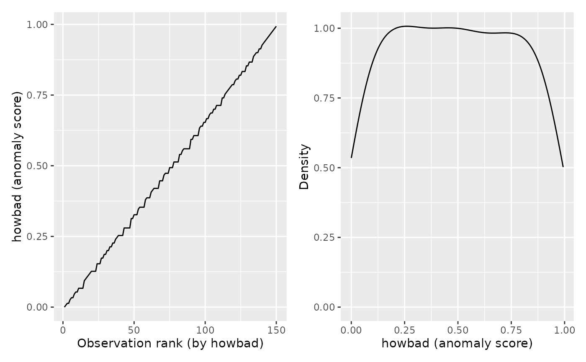

Pulls per-observation anomaly scores out of a isopro
fit so you can plot them, sort them, or write them to disk without having
to know the internal shape of the fit.
Arguments
- object
An
isoprofit returned byisopro.- ...
Currently unused. Present before
newdataso thatnewdatais only matched by name, preserving backward compatibility with callers of the PR #94 signaturegg_isopro(object, ...).- newdata
Optional
data.frameof new observations to score against the fit. Must be passed by name. WhenNULL(default) the extractor returns the in-sample tidy frame from the fit's stored$case.depthand$howbad. When supplied, each row is scored viapredict.isoproand the same tidy shape is returned for the test data.
Value
A data.frame of class c("gg_isopro", "data.frame"),
one row per observation. Columns:
- obs
Integer; observation index
1..n, in the same order as the rows of the data passed toisopro.- case.depth
Numeric; mean isolation depth across the forest. Lower means the observation was isolated quickly, so more anomalous.
- howbad
Numeric in
[0, 1]; thecase.depthvalues pushed through their own empirical CDF and flipped so higher means more anomalous. This is the score the plot method draws by default.
A provenance attribute records
source = "varPro::isopro", the observation count n, and
the number of trees ntree.
What isopro is doing
An isolation forest (Liu, Ting and Zhou 2008) is a random forest grown on very small subsamples of the data and asked to split until each observation lands in its own terminal node. The intuition is geometric: a typical observation sits in the dense middle of the feature cloud and takes many splits to isolate, while an unusual observation sits out near an edge and gets cut off after only a few. So the depth at which an observation is isolated is a proxy for how typical it is: shallow depth means anomalous, deep depth means ordinary. Average a single observation's depth across many trees and the noise washes out, leaving a stable per-observation rank.
isopro supports three flavours of isolation
forest, which differ in how the splits are chosen:
"rnd"The original Liu/Ting/Zhou method: each tree node picks a variable at random and a split point uniformly at random in the variable's range. Fast, no model, surprisingly effective.
"unsupv"Unsupervised splitting from
randomForestSRC: splits are chosen to separate the data along the directions of highest variance. More structured than"rnd"; sometimes more accurate, especially when the anomalies follow a coherent direction."auto"An auto-encoder formulation that grows a multivariate forest predicting each feature from the others. Most expressive, slowest, best suited to low-dimensional data.
No method is universally best. The varPro authors recommend trying at least two and comparing the score distributions; the plot method here colours per-method curves automatically when you stack the results.
What's in the output
The fit gives back two parallel per-observation vectors:
case.depth is the raw mean isolation depth (units of "splits",
lower = more anomalous) and howbad is the same information
transformed onto a [0, 1] scale via the empirical CDF of
case.depth (higher = more anomalous). Both columns are kept so
you can plot in either space and have the raw depth on hand for
diagnostics; howbad is the canonical score and is what the plot
method uses by default.
What you use this for
This is screening, not inference. Reach for it when you want to:
flag observations that may be data-entry errors, out-of-range measurements, or distinct subpopulations before fitting a primary model;
check whether a held-out cohort sits inside the training distribution before scoring with a model trained elsewhere;
give the analyst a ranked list of "look at these first" cases for a manual review;
score a held-out cohort or a fresh batch of incoming data against a fitted model and compare the test scores to the training distribution.
The score is a rank, not a probability of being an outlier: two
observations with howbad = 0.92 are both unusual, not "92\
likely to be anomalous". Pick a cutoff by looking at where the elbow
rises; plot.gg_isopro can annotate either a score
(threshold) or a top-percent (top_n_pct) for you.
Scoring new data
Pass a data.frame as newdata and the extractor calls
predict.isopro twice: once with
quantiles = FALSE to get the raw mean case depth per row, and once
with quantiles = TRUE to get the per-row quantile of that depth
against the training-data depth distribution.
varPro's predict.isopro returns quantiles where smaller is
more anomalous, which is the opposite polarity of the wrapper's
howbad (where higher is more anomalous). The wrapper
exposes both conventions so nothing is hidden:
case.depthcarries varPro's native polarity, lower = more anomalous. This is the unmodified output ofpredict(object, newdata, quantiles = FALSE). Use it to cross-reference against raw varPro output.howbadis the flipped, wrapper-convention version. The relationship ishowbad = 1 - predict(object, newdata, quantiles = TRUE).
To overlay training and test scores in one plot, bind the two extractor
calls with a method label column (the same column
plot.gg_isopro uses to colour rnd / unsupv / auto
comparisons):
Comparing methods
To compare methods ("rnd", "unsupv", "auto"), call
gg_isopro on each fit and dplyr::bind_rows() the
results with a method label column. The plot method auto-detects
method and colours the curves.
References
Liu, F. T., Ting, K. M., and Zhou, Z. H. (2008). Isolation Forest. Eighth IEEE International Conference on Data Mining, 413-422.
Ishwaran, H., Mantero, A., and Lu, M. (2025). varPro: Model-Independent Variable Selection via the Rule-Based Variable Priority Framework. R package version 3.x.
Examples
# \donttest{
if (requireNamespace("varPro", quietly = TRUE)) {
set.seed(1)
fit <- varPro::isopro(data = iris[, 1:4], method = "rnd",
sampsize = 32, ntree = 50)
gg <- gg_isopro(fit)
plot(gg)
}

# }